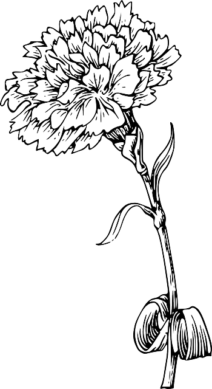

Who am I?
I am 22-year-old senior year student at the Univeristy of Miami.
I was born in Mexico City and grew up in Vancouver, Canada and in Mexico.
Thanks to these opportunities, I have been able to experience working with different people from many different backgrounds and cultures, which has helped me become a person that works well with diversity and that can handle change.
My Interests
I have many intertests outside of my field of study which also help shape the person I am today.
Thanks to my background of moving countries at a young age, I am very interetsed in travel and discovering new cultures. I want to continue seeing the world througout my life as I truly feel it is something that enriches me and helps me grow in many ways.
I also have a great interest in animals, especially dogs. I believe in putting my little grain of salt everyday in order to help protect the environment and therefore help animals stay safe and happy.
Out of all my many interests, the one which I am most passionate about is health, nutrition and exercise. This is becasue my everyday life is filled with this and it has become a huge part of who I am. I love anything that involves fueling my body and mind with health becasue I know that being healthy is extremelly important in order to live a fufilling life.
Culver Experience
Culver Summer Schools and Camps is a military summer camp which I attended the summers of 2011 and 2012. This experience, to the day, is one of the most important and life-changing opportunities I have ever had.
Culver reinstilled in me many important life and work ethic values which further helped shape me into the responsible and hard-wokrking person I am today.
I can without a doubt say that this place had an extremelly positive impact on me, and beyond all the values and